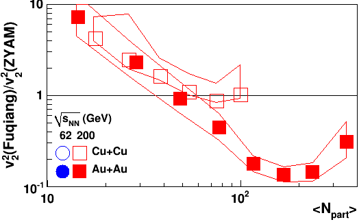
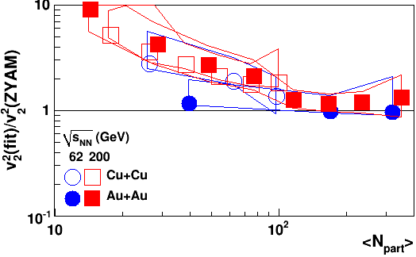

Following
Fuqiang's proposal over email and as agreed upon in the 23 Feb. 2011
GPC meeting, we attempted the following calculation:
Christine,
Thanks for the work. How about the following which will achieve the
same:
AA fit: near-side-gaus_AA + B_AA*(1+2vn2_AA*cos2dphi)
dAu fit: near-side-gaus_dA + B_dA*(1+2vn2_dA*cos2dphi)
Take the nonflow in AA to be that from dA, then the flow contribution
in AA would be
v32/v22 =
(B_AA*v32_AA - B_dA*v32_dA) / (B_AA*v22_AA
- B_dA*v22_dA)
Thanks,
Fuqiang
The output for (v3/v2)^2 from this method is below:
AuAu200CB1: Fuqiang's method 1.07 fit 0.615
AuAu200CB3: Fuqiang's method 2.53 fit 0.298
AuAu200CB4: Fuqiang's method 3.48 fit 0.207
AuAu200CB5: Fuqiang's method 4 fit 0.157
AuAu200CB6: Fuqiang's method 3.78 fit 0.123
AuAu200CB7: Fuqiang's method 3.65 fit 0.0387
AuAu200CB8: Fuqiang's method 2.47 fit -0.0451
AuAu200CB9: Fuqiang's method 2.97 fit -0.259
CuCu200CB1: Fuqiang's method 0.593 fit 0.511
CuCu200CB2: Fuqiang's method 1.03 fit 0.292
CuCu200CB3: Fuqiang's method 1.31 fit 0.158
CuCu200CB4: Fuqiang's method 1.5 fit 0.0234
CuCu200CB5: Fuqiang's method 1.56 fit -0.0738
CuCu200CB6: Fuqiang's method 2 fit -0.246
This has not been formatted and made into a pretty plot because it is
obvious that this method gives wildly different results from the fit
method.
Rather than assume that this means that the fit is not robust, we did a
cross check to see if this is a sensible method for subtracting
non-flow. If this accurately subtracts non-flow from the fit
v2^2, then the v2^2 given by this method
v22_AA
- B_dA*v22_dA/B_AA
should be consistent with the v2^2 used for the ZYAM method.
The plots below are the ratio of the v2^2 using Fuqiang's method to the
standard (ZYAM) method (left) and the ratio of the v2^2 from the fit to
the standard (ZYAM) method (right):
Fuqiang's proposed method
|
Fit
|

|

|
62 GeV data are not shown for the proposed method because 200 GeV d+Au
is not an appropriate reference for 62 GeV. The proposed method
for subtracting non-flow leads to a v2^2 an order of magnitude below
the v2^2 measured through other methods in central Au+Au collisions and
it is approximately an order of magnitude larger than v2^2 in
peripheral collisions. The fit method agrees with v2^2 from other
methods for large npart and the disagreement grows at smaller
npart. The proposed method for subtracting non-flow does not do
substantially better for peripheral collisions than the fit and does
substantially worse for central collisions. This discrepancy for
central collisions is due to the fact that jets are quenched in central
Au+Au collisions so this oversubtracts the contribution from
jets. If this method were to work in any region, we would expect
it to work best in peripheral collisions, where jets are not quenched;
however, this is not what we see.
Since this method does not accurately subtract non-flow from v2^2 where
we have some way of checking that the method leads to reasonable
results, it is not reasonable to expect that this is a reliable way of
subtracting non-flow contributions to v3^2, where we have no way of
cross checking the results of this exercise. Since v3^2<0 in
d+Au, this method will always increase v3^2. Additionally, v2^2
will always be lower from this method than from the fit, so this method
will always increase (v3/v2)^2.